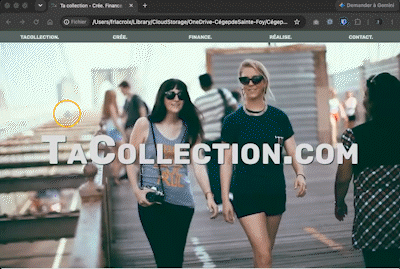
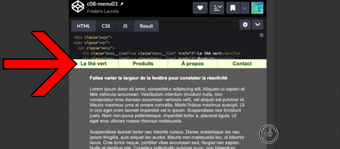

Qu'est-ce qu'un site monopage?
Le site monopage est un site Web dont le contenu est organisé sur une seule page HTML. Plutôt que de naviguer entre plusieurs pages, l’utilisateur parcourt généralement le contenu en faisant défiler la page verticalement ou en utilisant une navigation qui mène directement à différentes sections.
En anglais, on l’appelle one-page website ou single-page website.
Ce type de site est particulièrement adapté à la présentation d’un produit, d’un artiste ou d’un portfolio professionnel. Il privilégie généralement une approche visuelle forte, une structure claire et une expérience de navigation fluide.
On y retrouve souvent des effets visuels et des animations, comme le défilement parallaxe (parallax scrolling), qui crée une impression de profondeur lorsque différents éléments se déplacent à des vitesses différentes pendant le défilement.

Références
Exemples de site monopages
Répertoires de sites monopages
Articles à propos des sites monopages
Les ancres HTML pour naviguer dans un site monopage
Contrairement aux hyperliens courants - qui permettent de naviger d'une page à l'autre -, les ancres HTML sont des liens qui permettent de naviguer à l'intérieur même d'une page HTML. Ils sont particulièrement utiles dans le cas d'une longue page HTML ou encore dans le cas d'un site monopage, c'est-à-dire un site formé d'une seule page mais comportant plusieurs sections.
L'adresse du lien cliquable s'écrit ainsi (remarquez le # qui débute le nom de l'ancre) :
Exemple de lien vers une ancre
<a href="#biographie">Lien vers mon ancre</a>
La destination du lien est identifiée par un id inséré dans la balise ouvrante de l'élément HTML visé (souvent un élément de structure ou un titre). Comme ceci:
Exemple d'ancre (la destination)
<article id="biographie">...</article>
Lien vers le haut de la page
Dans une longue page HTML, il est fréquent de trouver un ou des liens pointant vers le haut de la page. L'adresse de celui-ci s'écrit simplement ainsi : #. Dans ce cas, il n'est pas nécessaire d'ajouter une ancre de destination dans le haut de la page. Le lien vers le haut de la page s'écrit ainsi :
Exemple de lien vers le haut de la page
<a href="#">Lien vers le haut de la page</a>
Voyez maintenant un exemple complet d'un menu de trois liens menant vers des ancres plus loin dans la page. Cliquez sur l'un des liens pour constater :
See the Pen ancres HTML et retour en haut de page by Frédéric Lacroix (@frlacroix) on CodePen.
Le menu réactif
Voici un exemple de menu réactif. En mode écran étroit, le premier lien du menu - qui est aussi le titre du site - prend toute la largeur. En mode écran large, ce lien côtoie les autres. Faites varier la largeur de la fenêtre pour constater la transformation.

See the Pen c08-menu01 by Frédéric Lacroix (@frlacroix) on CodePen.
La mise en forme alternée
Pour mettre en forme de manière alternative une suite d'éléments (paragraphes, articles, lignes de tableau, etc.) on peut utiliser le pseudo-élément nth-of-type ou nth-child avec les modificateurs spécialisés 'odd' (impair) et 'even' (pair).
See the Pen c09-nth-child by Frédéric Lacroix (@frlacroix) on CodePen.
Votre lecture se termine ici.
Avant le prochain cours, assurez-vous d’avoir:
- réalisé les travaux formatifs;
- expérimenté et sauvegardé les pens dans votre compte Codepen;
- noté les questions qui vous sont venues pendant votre lecture.